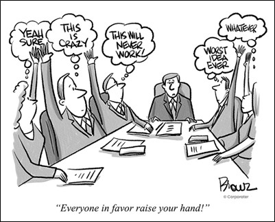

POLS 3220: How to Predict the Future
If you can engineer conditions so that you have a large group of independent and competent individuals, then your crowd will be wise.
But in most real-world groups, those assumptions are rarely met.
Today, a few violations of the independence assumption, and how it can affect group decision-making.
An information cascade occurs whenever individuals ignore their private information and go with the group consensus.
This can be a perfectly rational decision from a Bayesian perspective.
If the first two students draw blue chips, posterior odds are \(1:1 \times 2:1 \times 2:1 = 4:1\) that it’s the blue bag.
If the third student draws a blue chip, posterior odds are \(8:1\). Guess blue!
If the third student draws a red chip, posterior odds are \(2:1\). Guess blue!
Information cascades don’t always mean that the group will always get the wrong answer.
But they do illustrate how hard it is to make a truly independent prediction in a group setting.
If we can observe the predictions that other people make, there’s a strong rational basis for ignoring our individual information and just going with the group.
When individuals suppress their private information for the sake of group harmony/cohesion, we call it groupthink.
History is full of examples of catastrophic predictions / decisions made by groups that valued harmony over accuracy:
Bay of Pigs invasion (1961)
Pearl Harbor attacks (1941)
Space Shuttle Challenger disaster (1986)
These are just a few examples of cases where people kept their private doubts quiet to conform with the group consensus.
We don’t naturally design our groups in a way that promotes independence.
When people share their predictions but not their reasoning, a common result is information cascades.
We are social creatures, and so face strong pressures towards group conformity.
If you want to harness the wisdom of crowds, give individuals the freedom and motivation to work independently and report their information honestly.
Social Influence
Even when there is no rational basis for doing so, we still might face strong pressures to conform with the group…